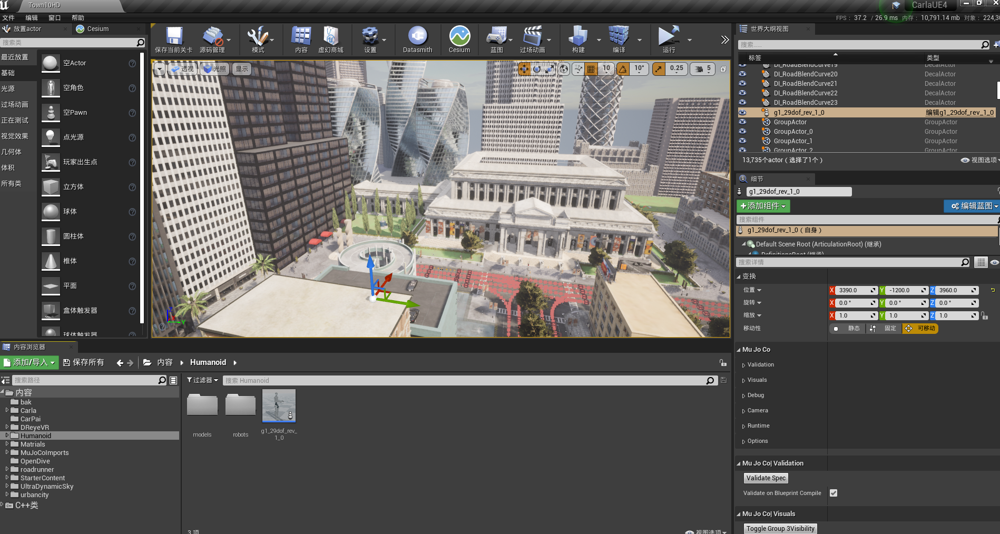
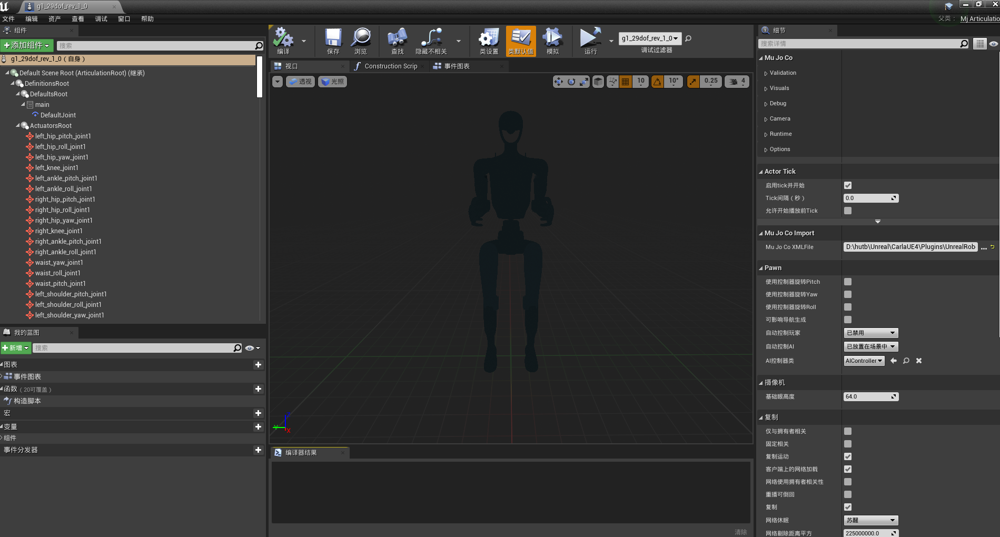
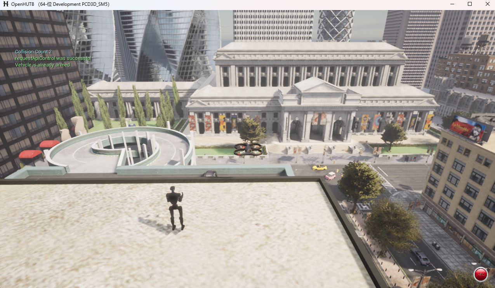

适配 hutb 模拟器
1.Ubuntu系统启用错误禁用的 UnrealRoboticsLab 插件后执行make CarlaUE4Editor的编译问题与解决方案
2.Ubuntu系统启用错误禁用的 UnrealRoboticsLab 插件后执行make_package的编译问题与解决方案
注意
如果不需要编辑模型，可以直接进入 网盘 进行下载software/hutb/hutb_v2.10.0.zip，解压后即可运行。
下面是适配 hutb 模拟器的运行过程：
1.通过将 mujoco 的 xml 文件拖拽到虚幻编辑器的“内容浏览器”，将 xml 转成 _ue.xml 文件。hutb 引擎中默认使用的是 Engine/Binaries/ThirdParty/Python3/Win64 中的 Python 3.7.7（UE 5.7 中默认使用的是 Python 3.11.8）。解析 xml由 UMujocoGenerationAction::ParseAssetsRecursive 负责。其中 Mujoco 管理器 Source/URLab/Public/MuJoCo/Core/AMjManager.h 是一个参与者，通过它进行xml文件的加载。
2.上一步执行完成会在“内容浏览器”中生成蓝图，然后将生成的蓝图拖拽到场景的合适位置（参考 mujoco_plugin ），

3.打开导入的蓝图进行查看（可选，如果模型未显示全，则第1步的导入有问题）：

4.运行模拟，在场景中指定位置查看蓝图实例化效果：

问题
-
导入鱼形机器人只有相应的方块，没有纹理
onecore\windows\directx\database\helperlibrary\lib\directxdatabasehelper.cpp(1020)\directxdatabasehelper.dll!00007FFD0E042CC3: (caller: 00007FFD0E0422CD) ReturnHr(19) tid(741c) 80004002 不支持此接口 [2026.07.15-02.11.40:551][567]LogSlate: Took 0.000192 seconds to synchronously load lazily loaded font '../../../Engine/Content/Slate/Fonts/Roboto-Light.ttf' (167K) [2026.07.15-02.11.40:592][567]LogFactory: FactoryCreateFile: Blueprint with MujocoImportFactory (0 0 D:\work\workspace\fishsim\Geometry\exampleFish.xml) [2026.07.15-02.11.40:738][567]LogURLabEditor: [Python] Validated: D:/hutb/Build/engine/Engine/Binaries/ThirdParty/Python3/Win64/python.exe -> Python 3.7.7 [2026.07.15-02.11.44:470][567]LogURLabEditor: [Python] Stored Python path 'D:/hutb/Build/engine/Engine/Binaries/ThirdParty/Python3/Win64/python.exe' to config: D:/hutb/Unreal/CarlaUE4/Plugins/UnrealRoboticsLab/Config/LocalUnrealRoboticsLab.ini [2026.07.15-02.11.44:470][567]LogURLabEditor: [Python] Ready: D:/hutb/Build/engine/Engine/Binaries/ThirdParty/Python3/Win64/python.exe [2026.07.15-02.11.44:470][567]LogURLabEditor: Running mesh preparation: D:/hutb/Build/engine/Engine/Binaries/ThirdParty/Python3/Win64/python.exe "../../../../../Unreal/CarlaUE4/Plugins/UnrealRoboticsLab/Scripts/clean_meshes.py" "D:\work\workspace\fishsim\Geometry\exampleFish.xml" [2026.07.15-02.11.44:847][567]LogURLabEditor: Using prepared XML: D:\work\workspace\fishsim\Geometry/exampleFish_ue.xml 线程 19496 已退出，返回值为 0 (0x0)。 线程 31084 已退出，返回值为 0 (0x0)。 线程 19312 已退出，返回值为 0 (0x0)。 线程 36548 已退出，返回值为 0 (0x0)。 [2026.07.15-02.11.44:908][567]LogURLabEditor: Found Texture: texplane -> D:\work\workspace\fishsim\Geometry/texplane [2026.07.15-02.11.44:908][567]LogURLabEditor: Found Material: matplane (RGBA: (R=1.000000,G=1.000000,B=1.000000,A=1.000000), Texture: texplane) [2026.07.15-02.11.44:908][567]LogURLabEditor: [Mesh Map] Adding mesh: name='finTop' -> file='D:\work\workspace\fishsim\Geometry/Meshes/finTop.obj' [2026.07.15-02.11.44:909][567]LogURLabEditor: Pure XML Found Mesh: finTop -> D:\work\workspace\fishsim\Geometry/Meshes/finTop.obj (Scale: X=1.000 Y=1.000 Z=1.000) [2026.07.15-02.11.44:909][567]LogURLabEditor: [Mesh Map] Adding mesh: name='finTail' -> file='D:\work\workspace\fishsim\Geometry/Meshes/finTail.obj' [2026.07.15-02.11.44:909][567]LogURLabEditor: Pure XML Found Mesh: finTail -> D:\work\workspace\fishsim\Geometry/Meshes/finTail.obj (Scale: X=1.000 Y=1.000 Z=1.000) [2026.07.15-02.11.44:909][567]LogURLabEditor: Found Material: acrylic (RGBA: (R=0.900000,G=0.900000,B=0.900000,A=0.200000), Texture: ) [2026.07.15-02.11.44:909][567]LogURLabEditor: Found Material: alu (RGBA: (R=0.700000,G=0.700000,B=0.700000,A=1.000000), Texture: ) [2026.07.15-02.11.44:909][567]LogURLabEditor: Found Material: marker (RGBA: (R=0.900000,G=0.400000,B=0.100000,A=0.500000), Texture: ) [2026.07.15-02.11.44:909][567]LogLinker: Warning: 未能加载“{FileName}”：无法找到文件。 [2026.07.15-02.11.44:909][567]LogLinker: Warning: 未能加载“{FileName}”：无法找到文件。 [2026.07.15-02.11.44:910][567]LogUObjectGlobals: Warning: 寻找对象“Texture2D 无./Game/MuJoCoImports/exampleFish_ue_Assets/texplane”失败 [2026.07.15-02.11.44:910][567]LogURLabEditor: Importing texture from: D:\work\workspace\fishsim\Geometry/texplane to /Game/MuJoCoImports/exampleFish_ue_Assets [2026.07.15-02.11.44:910][567]LogStreaming: Warning: Failed to read file 'D:\work\workspace\fishsim\Geometry/texplane' error. [2026.07.15-02.11.44:910][567]LogURLabEditor: Error: Failed to load texture file: D:\work\workspace\fishsim\Geometry/texplane [2026.07.15-02.11.44:910][567]LogURLabEditor: Warning: Failed to import texture: texplane from D:\work\workspace\fishsim\Geometry/texplane [2026.07.15-02.11.44:910][567]LogURLabEditor: Creating organizational hierarchy... [2026.07.15-02.11.45:003][567]LogURLabEditor: Creating Default Component: main (Parent: ) [2026.07.15-02.11.45:004][567]LogURLabImport: [MjJoint XML Import] 'DefaultJoint_GEN_VARIABLE' (MjName: '') -> Type: Hinge (Overridden: True), Stiffness: Set (0.650000) [2026.07.15-02.11.45:004][567]LogURLabEditor: - Found Default Joint: DefaultJoint (Type Overridden: True) [2026.07.15-02.11.45:005][567]LogURLabImport: [MjGeom XML Import] 'DefaultGeom_GEN_VARIABLE' -> Contype: Inherited (1), Conaffinity: Inherited (1) [2026.07.15-02.11.45:006][567]LogURLabImport: [MjGeom XML Import] 'floor_GEN_VARIABLE' -> Material: 'matplane' [2026.07.15-02.11.45:006][567]LogURLabImport: [MjGeom XML Import] 'floor_GEN_VARIABLE' -> Contype: Inherited (1), Conaffinity: Inherited (1) [2026.07.15-02.11.45:006][567]LogURLabImport: [MjJoint XML Import] 'headX_0_GEN_VARIABLE' (MjName: '') -> Type: Slide (Overridden: True), Stiffness: Set (0.000000) [2026.07.15-02.11.45:006][567]LogURLabImport: [MjJoint XML Import] 'headY_0_GEN_VARIABLE' (MjName: '') -> Type: Slide (Overridden: True), Stiffness: Set (0.000000) [2026.07.15-02.11.45:006][567]LogURLabImport: [MjJoint XML Import] 'headZ_0_GEN_VARIABLE' (MjName: '') -> Type: Slide (Overridden: True), Stiffness: Set (500.000000) [2026.07.15-02.11.45:006][567]LogURLabImport: [MjJoint XML Import] 'headRollX_0_GEN_VARIABLE' (MjName: '') -> Type: Hinge (Overridden: True), Stiffness: Set (10.000000) [2026.07.15-02.11.45:007][567]LogURLabImport: [MjJoint XML Import] 'headRollY_0_GEN_VARIABLE' (MjName: '') -> Type: Hinge (Overridden: True), Stiffness: Set (10.000000) [2026.07.15-02.11.45:007][567]LogURLabImport: [MjJoint XML Import] 'headRollZ_0_GEN_VARIABLE' (MjName: '') -> Type: Hinge (Overridden: True), Stiffness: Set (0.000000) [2026.07.15-02.11.45:007][567]LogURLabImport: [MjGeom XML Import] 'headPlate_0_GEN_VARIABLE' -> Material: 'acrylic' [2026.07.15-02.11.45:007][567]LogURLabImport: [MjGeom XML Import] 'headPlate_0_GEN_VARIABLE' -> Contype: Inherited (1), Conaffinity: Inherited (1) [2026.07.15-02.11.45:007][567]LogURLabEditor: Applying visual properties to built-in visualizer for 'headPlate_0' [2026.07.15-02.11.45:007][567]LogLinker: Warning: 未能加载“{FileName}”：无法找到文件。 [2026.07.15-02.11.45:008][567]LogLinker: Warning: 未能加载“{FileName}”：无法找到文件。 [2026.07.15-02.11.45:008][567]LogUObjectGlobals: Warning: 寻找对象“Material /UnrealRoboticsLab/Materials/M_MuJoCo_Master.M_MuJoCo_Master”失败 [2026.07.15-02.11.45:008][567]LogURLabEditor: Error: Failed to load master material: /UnrealRoboticsLab/Materials/M_MuJoCo_Master [2026.07.15-02.11.45:008][567]LogURLabImport: [MjGeom XML Import] 'headTopPlate_0_GEN_VARIABLE' -> Contype: Inherited (1), Conaffinity: Inherited (1) [2026.07.15-02.11.45:008][567]LogURLabEditor: Applying visual properties to built-in visualizer for 'headTopPlate_0' [2026.07.15-02.11.45:008][567]LogURLabEditor: Error: Failed to load master material: /UnrealRoboticsLab/Materials/M_MuJoCo_Master [2026.07.15-02.11.45:008][567]LogURLabImport: [MjGeom XML Import] 'headTopElectric_0_GEN_VARIABLE' -> Contype: Inherited (1), Conaffinity: Inherited (1) [2026.07.15-02.11.45:008][567]LogURLabEditor: Applying visual properties to built-in visualizer for 'headTopElectric_0' [2026.07.15-02.11.45:008][567]LogURLabEditor: Error: Failed to load master material: /UnrealRoboticsLab/Materials/M_MuJoCo_Master [2026.07.15-02.11.45:008][567]LogURLabImport: [MjGeom XML Import] 'headAttachment_0_GEN_VARIABLE' -> Contype: Inherited (1), Conaffinity: Inherited (1) [2026.07.15-02.11.45:008][567]LogURLabEditor: Applying visual properties to built-in visualizer for 'headAttachment_0' [2026.07.15-02.11.45:009][567]LogURLabEditor: Error: Failed to load master material: /UnrealRoboticsLab/Materials/M_MuJoCo_Master [2026.07.15-02.11.45:009][567]LogURLabImport: [MjGeom XML Import] 'body_0_GEN_VARIABLE' -> Material: 'alu' [2026.07.15-02.11.45:009][567]LogURLabImport: [MjGeom XML Import] 'body_0_GEN_VARIABLE' -> Contype: Inherited (1), Conaffinity: Inherited (1) [2026.07.15-02.11.45:009][567]LogURLabEditor: Applying visual properties to built-in visualizer for 'body_0' [2026.07.15-02.11.45:009][567]LogURLabEditor: Error: Failed to load master material: /UnrealRoboticsLab/Materials/M_MuJoCo_Master [2026.07.15-02.11.45:009][567]LogURLabImport: [MjGeom XML Import] 'body-joint0_0_GEN_VARIABLE' -> Contype: Inherited (1), Conaffinity: Inherited (1) [2026.07.15-02.11.45:009][567]LogURLabEditor: Applying visual properties to built-in visualizer for 'body-joint0_0' [2026.07.15-02.11.45:009][567]LogURLabEditor: Error: Failed to load master material: /UnrealRoboticsLab/Materials/M_MuJoCo_Master [2026.07.15-02.11.45:009][567]LogURLabImport: [MjGeom XML Import] 'finTop_0_GEN_VARIABLE' -> Material: 'acrylic' [2026.07.15-02.11.45:009][567]LogURLabImport: [MjGeom XML Import] 'finTop_0_GEN_VARIABLE' -> Contype: Inherited (1), Conaffinity: Inherited (1) [2026.07.15-02.11.45:009][567]LogURLabEditor: [Mesh Import] Geom 'finTop_0': mesh='finTop', class='', group=0 [2026.07.15-02.11.45:010][567]LogURLabEditor: [Mesh Import] -> Resolved mesh 'finTop' to file: D:\work\workspace\fishsim\Geometry/Meshes/finTop.obj [2026.07.15-02.11.45:010][567]LogLinker: Warning: 未能加载“{FileName}”：无法找到文件。 [2026.07.15-02.11.45:010][567]LogLinker: Warning: 未能加载“{FileName}”：无法找到文件。 [2026.07.15-02.11.45:010][567]LogUObjectGlobals: Warning: 寻找对象“StaticMesh 无./Game/MuJoCoImports/exampleFish_ue_Assets/Meshes/finTop”失败 [2026.07.15-02.11.45:010][567]LogURLabEditor: Importing mesh from: D:\work\workspace\fishsim\Geometry/Meshes/finTop.obj to /Game/MuJoCoImports/exampleFish_ue_Assets/Meshes [2026.07.15-02.11.45:010][567]LogURLabEditor: Found higher priority mesh file: D:\work\workspace\fishsim\Geometry/Meshes/finTop.glb [2026.07.15-02.11.45:010][567]LogURLabEditor: Using automated factory detection for mesh: D:\work\workspace\fishsim\Geometry/Meshes/finTop.glb [2026.07.15-02.11.45:012][567]LogFactory: FactoryCreateFile: StaticMesh with glTFBinaryFactory (0 0 D:/work/workspace/fishsim/Geometry/Meshes/finTop.glb) [2026.07.15-02.11.45:012][567]LogAssetTools: Warning: 未能导入 'D:/work/workspace/fishsim/Geometry/Meshes/finTop.glb’。未能创建资产 '/Game/MuJoCoImports/exampleFish_ue_Assets/Meshes/finTop’。 请查看输出日志中的详情。 [2026.07.15-02.11.45:014][567]LogFileHelpers: 没有需要保存的新变更！ [2026.07.15-02.11.45:014][567]LogURLabEditor: [ImportSingleMesh] Import returned 0 objects: [2026.07.15-02.11.45:014][567]LogLinker: Warning: 未能加载“{FileName}”：无法找到文件。 [2026.07.15-02.11.45:015][567]LogLinker: Warning: 未能加载“{FileName}”：无法找到文件。 [2026.07.15-02.11.45:015][567]LogUObjectGlobals: Warning: 寻找对象“StaticMesh /Game/MuJoCoImports/exampleFish_ue_Assets/Meshes/finTop/StaticMeshes/finTop.finTop”失败 [2026.07.15-02.11.45:015][567]LogURLabEditor: [ImportSingleMesh] Not found at: /Game/MuJoCoImports/exampleFish_ue_Assets/Meshes/finTop/StaticMeshes/finTop.finTop [2026.07.15-02.11.45:015][567]LogUObjectGlobals: Warning: 寻找对象“StaticMesh 无./Game/MuJoCoImports/exampleFish_ue_Assets/Meshes/finTop/StaticMeshes/finTop”失败 [2026.07.15-02.11.45:015][567]LogURLabEditor: [ImportSingleMesh] Not found at: /Game/MuJoCoImports/exampleFish_ue_Assets/Meshes/finTop/StaticMeshes/finTop [2026.07.15-02.11.45:015][567]LogLinker: Warning: 未能加载“{FileName}”：无法找到文件。 [2026.07.15-02.11.45:015][567]LogUObjectGlobals: Warning: 寻找对象“StaticMesh /Game/MuJoCoImports/exampleFish_ue_Assets/Meshes/finTop.finTop”失败 [2026.07.15-02.11.45:015][567]LogURLabEditor: [ImportSingleMesh] Not found at: /Game/MuJoCoImports/exampleFish_ue_Assets/Meshes/finTop.finTop [2026.07.15-02.11.45:015][567]LogURLabEditor: [ImportSingleMesh] Searching asset registry under: /Game/MuJoCoImports/exampleFish_ue_Assets/Meshes/finTop [2026.07.15-02.11.45:032][567]LogURLabEditor: Warning: Failed to import mesh 'finTop' with MikkTSpace, attempting fallback [2026.07.15-02.11.45:032][567]LogURLabEditor: Using automated factory detection for mesh: D:\work\workspace\fishsim\Geometry/Meshes/finTop.glb [2026.07.15-02.11.45:033][567]LogFactory: FactoryCreateFile: StaticMesh with glTFBinaryFactory (0 0 D:/work/workspace/fishsim/Geometry/Meshes/finTop.glb) [2026.07.15-02.11.45:034][567]LogAssetTools: Warning: 未能导入 'D:/work/workspace/fishsim/Geometry/Meshes/finTop.glb’。未能创建资产 '/Game/MuJoCoImports/exampleFish_ue_Assets/Meshes/finTop’。 请查看输出日志中的详情。 [2026.07.15-02.11.45:034][567]LogFileHelpers: 没有需要保存的新变更！ [2026.07.15-02.11.45:034][567]LogURLabEditor: [ImportSingleMesh] Import returned 0 objects: [2026.07.15-02.11.45:034][567]LogURLabEditor: [ImportSingleMesh] Not found at: /Game/MuJoCoImports/exampleFish_ue_Assets/Meshes/finTop/StaticMeshes/finTop.finTop [2026.07.15-02.11.45:034][567]LogUObjectGlobals: Warning: 寻找对象“StaticMesh 无./Game/MuJoCoImports/exampleFish_ue_Assets/Meshes/finTop/StaticMeshes/finTop”失败 [2026.07.15-02.11.45:034][567]LogURLabEditor: [ImportSingleMesh] Not found at: /Game/MuJoCoImports/exampleFish_ue_Assets/Meshes/finTop/StaticMeshes/finTop [2026.07.15-02.11.45:034][567]LogURLabEditor: [ImportSingleMesh] Not found at: /Game/MuJoCoImports/exampleFish_ue_Assets/Meshes/finTop.finTop [2026.07.15-02.11.45:034][567]LogURLabEditor: [ImportSingleMesh] Searching asset registry under: /Game/MuJoCoImports/exampleFish_ue_Assets/Meshes/finTop [2026.07.15-02.11.45:046][567]LogURLabEditor: Error: Failed to import mesh 'finTop' - all import methods failed [2026.07.15-02.11.45:046][567]LogURLabImport: [MjJoint XML Import] 'motor_1_GEN_VARIABLE' (MjName: '') -> Type: Hinge (Overridden: True), Stiffness: Set (0.000000) [2026.07.15-02.11.45:047][567]LogURLabImport: [MjGeom XML Import] 'motorShaft_0_GEN_VARIABLE' -> Contype: Inherited (1), Conaffinity: Inherited (1) [2026.07.15-02.11.45:047][567]LogURLabEditor: Applying visual properties to built-in visualizer for 'motorShaft_0' [2026.07.15-02.11.45:047][567]LogURLabEditor: Error: Failed to load master material: /UnrealRoboticsLab/Materials/M_MuJoCo_Master [2026.07.15-02.11.45:047][567]LogURLabImport: [MjGeom XML Import] 'motorArmLeft_0_GEN_VARIABLE' -> Contype: Inherited (1), Conaffinity: Inherited (1) [2026.07.15-02.11.45:047][567]LogURLabEditor: Applying visual properties to built-in visualizer for 'motorArmLeft_0' [2026.07.15-02.11.45:048][567]LogURLabEditor: Error: Failed to load master material: /UnrealRoboticsLab/Materials/M_MuJoCo_Master [2026.07.15-02.11.45:048][567]LogURLabImport: [MjGeom XML Import] 'motorArmRight_0_GEN_VARIABLE' -> Contype: Inherited (1), Conaffinity: Inherited (1) [2026.07.15-02.11.45:048][567]LogURLabEditor: Applying visual properties to built-in visualizer for 'motorArmRight_0' [2026.07.15-02.11.45:048][567]LogURLabEditor: Error: Failed to load master material: /UnrealRoboticsLab/Materials/M_MuJoCo_Master [2026.07.15-02.11.45:048][567]LogURLabImport: [MjGeom XML Import] 'joint0_0_GEN_VARIABLE' -> Contype: Inherited (1), Conaffinity: Inherited (1) [2026.07.15-02.11.45:048][567]LogURLabEditor: Applying visual properties to built-in visualizer for 'joint0_0' [2026.07.15-02.11.45:048][567]LogURLabEditor: Error: Failed to load master material: /UnrealRoboticsLab/Materials/M_MuJoCo_Master [2026.07.15-02.11.45:048][567]LogURLabImport: [MjJoint XML Import] 'joint0_1_GEN_VARIABLE' (MjName: '') -> Type: Hinge (Overridden: False), Stiffness: Inherited (0.000000) [2026.07.15-02.11.45:049][567]LogURLabImport: [MjGeom XML Import] 'joint0-tail0_0_GEN_VARIABLE' -> Contype: Inherited (1), Conaffinity: Inherited (1) [2026.07.15-02.11.45:049][567]LogURLabEditor: Applying visual properties to built-in visualizer for 'joint0-tail0_0' [2026.07.15-02.11.45:049][567]LogURLabEditor: Error: Failed to load master material: /UnrealRoboticsLab/Materials/M_MuJoCo_Master [2026.07.15-02.11.45:049][567]LogURLabImport: [MjGeom XML Import] 'tail0_0_GEN_VARIABLE' -> Contype: Inherited (1), Conaffinity: Inherited (1) [2026.07.15-02.11.45:049][567]LogURLabEditor: Applying visual properties to built-in visualizer for 'tail0_0' [2026.07.15-02.11.45:049][567]LogURLabEditor: Error: Failed to load master material: /UnrealRoboticsLab/Materials/M_MuJoCo_Master [2026.07.15-02.11.45:049][567]LogURLabImport: [MjGeom XML Import] 'tail0left_0_GEN_VARIABLE' -> Contype: Inherited (1), Conaffinity: Inherited (1) [2026.07.15-02.11.45:049][567]LogURLabEditor: Applying visual properties to built-in visualizer for 'tail0left_0' [2026.07.15-02.11.45:049][567]LogURLabEditor: Error: Failed to load master material: /UnrealRoboticsLab/Materials/M_MuJoCo_Master [2026.07.15-02.11.45:050][567]LogURLabImport: [MjGeom XML Import] 'tail0right_0_GEN_VARIABLE' -> Contype: Inherited (1), Conaffinity: Inherited (1) [2026.07.15-02.11.45:050][567]LogURLabEditor: Applying visual properties to built-in visualizer for 'tail0right_0' [2026.07.15-02.11.45:050][567]LogURLabEditor: Error: Failed to load master material: /UnrealRoboticsLab/Materials/M_MuJoCo_Master [2026.07.15-02.11.45:050][567]LogURLabImport: [MjGeom XML Import] 'tail0-joint1_0_GEN_VARIABLE' -> Contype: Inherited (1), Conaffinity: Inherited (1) [2026.07.15-02.11.45:050][567]LogURLabEditor: Applying visual properties to built-in visualizer for 'tail0-joint1_0' [2026.07.15-02.11.45:050][567]LogURLabEditor: Error: Failed to load master material: /UnrealRoboticsLab/Materials/M_MuJoCo_Master [2026.07.15-02.11.45:050][567]LogURLabImport: [MjGeom XML Import] 'joint1_0_GEN_VARIABLE' -> Contype: Inherited (1), Conaffinity: Inherited (1) [2026.07.15-02.11.45:050][567]LogURLabEditor: Applying visual properties to built-in visualizer for 'joint1_0' [2026.07.15-02.11.45:051][567]LogURLabEditor: Error: Failed to load master material: /UnrealRoboticsLab/Materials/M_MuJoCo_Master [2026.07.15-02.11.45:051][567]LogURLabImport: [MjJoint XML Import] 'joint1_1_GEN_VARIABLE' (MjName: '') -> Type: Hinge (Overridden: False), Stiffness: Inherited (0.000000) [2026.07.15-02.11.45:051][567]LogURLabImport: [MjGeom XML Import] 'joint1-tail1_0_GEN_VARIABLE' -> Contype: Inherited (1), Conaffinity: Inherited (1) [2026.07.15-02.11.45:051][567]LogURLabEditor: Applying visual properties to built-in visualizer for 'joint1-tail1_0' [2026.07.15-02.11.45:051][567]LogURLabEditor: Error: Failed to load master material: /UnrealRoboticsLab/Materials/M_MuJoCo_Master [2026.07.15-02.11.45:051][567]LogURLabImport: [MjGeom XML Import] 'tail1_0_GEN_VARIABLE' -> Contype: Inherited (1), Conaffinity: Inherited (1) [2026.07.15-02.11.45:051][567]LogURLabEditor: Applying visual properties to built-in visualizer for 'tail1_0' [2026.07.15-02.11.45:051][567]LogURLabEditor: Error: Failed to load master material: /UnrealRoboticsLab/Materials/M_MuJoCo_Master [2026.07.15-02.11.45:051][567]LogURLabImport: [MjGeom XML Import] 'tail1left_0_GEN_VARIABLE' -> Contype: Inherited (1), Conaffinity: Inherited (1) [2026.07.15-02.11.45:052][567]LogURLabEditor: Applying visual properties to built-in visualizer for 'tail1left_0' [2026.07.15-02.11.45:052][567]LogURLabEditor: Error: Failed to load master material: /UnrealRoboticsLab/Materials/M_MuJoCo_Master [2026.07.15-02.11.45:052][567]LogURLabImport: [MjGeom XML Import] 'tail1right_0_GEN_VARIABLE' -> Contype: Inherited (1), Conaffinity: Inherited (1) [2026.07.15-02.11.45:052][567]LogURLabEditor: Applying visual properties to built-in visualizer for 'tail1right_0' [2026.07.15-02.11.45:052][567]LogURLabEditor: Error: Failed to load master material: /UnrealRoboticsLab/Materials/M_MuJoCo_Master [2026.07.15-02.11.45:052][567]LogURLabImport: [MjGeom XML Import] 'tail1-joint2_0_GEN_VARIABLE' -> Contype: Inherited (1), Conaffinity: Inherited (1) [2026.07.15-02.11.45:052][567]LogURLabEditor: Applying visual properties to built-in visualizer for 'tail1-joint2_0' [2026.07.15-02.11.45:052][567]LogURLabEditor: Error: Failed to load master material: /UnrealRoboticsLab/Materials/M_MuJoCo_Master [2026.07.15-02.11.45:053][567]LogURLabImport: [MjGeom XML Import] 'joint2_0_GEN_VARIABLE' -> Contype: Inherited (1), Conaffinity: Inherited (1) [2026.07.15-02.11.45:053][567]LogURLabEditor: Applying visual properties to built-in visualizer for 'joint2_0' [2026.07.15-02.11.45:053][567]LogURLabEditor: Error: Failed to load master material: /UnrealRoboticsLab/Materials/M_MuJoCo_Master [2026.07.15-02.11.45:053][567]LogURLabImport: [MjJoint XML Import] 'joint2_1_GEN_VARIABLE' (MjName: '') -> Type: Hinge (Overridden: False), Stiffness: Inherited (0.000000) [2026.07.15-02.11.45:053][567]LogURLabImport: [MjGeom XML Import] 'joint2-tail2_0_GEN_VARIABLE' -> Contype: Inherited (1), Conaffinity: Inherited (1) [2026.07.15-02.11.45:053][567]LogURLabEditor: Applying visual properties to built-in visualizer for 'joint2-tail2_0' [2026.07.15-02.11.45:053][567]LogURLabEditor: Error: Failed to load master material: /UnrealRoboticsLab/Materials/M_MuJoCo_Master [2026.07.15-02.11.45:053][567]LogURLabImport: [MjGeom XML Import] 'tail2_0_GEN_VARIABLE' -> Contype: Inherited (1), Conaffinity: Inherited (1) [2026.07.15-02.11.45:053][567]LogURLabEditor: Applying visual properties to built-in visualizer for 'tail2_0' [2026.07.15-02.11.45:053][567]LogURLabEditor: Error: Failed to load master material: /UnrealRoboticsLab/Materials/M_MuJoCo_Master [2026.07.15-02.11.45:053][567]LogURLabImport: [MjGeom XML Import] 'tail2left_0_GEN_VARIABLE' -> Contype: Inherited (1), Conaffinity: Inherited (1) [2026.07.15-02.11.45:053][567]LogURLabEditor: Applying visual properties to built-in visualizer for 'tail2left_0' [2026.07.15-02.11.45:054][567]LogURLabEditor: Error: Failed to load master material: /UnrealRoboticsLab/Materials/M_MuJoCo_Master [2026.07.15-02.11.45:054][567]LogURLabImport: [MjGeom XML Import] 'tail2right_0_GEN_VARIABLE' -> Contype: Inherited (1), Conaffinity: Inherited (1) [2026.07.15-02.11.45:054][567]LogURLabEditor: Applying visual properties to built-in visualizer for 'tail2right_0' [2026.07.15-02.11.45:054][567]LogURLabEditor: Error: Failed to load master material: /UnrealRoboticsLab/Materials/M_MuJoCo_Master [2026.07.15-02.11.45:054][567]LogURLabImport: [MjGeom XML Import] 'tail2-joint3_0_GEN_VARIABLE' -> Contype: Inherited (1), Conaffinity: Inherited (1) [2026.07.15-02.11.45:054][567]LogURLabEditor: Applying visual properties to built-in visualizer for 'tail2-joint3_0' [2026.07.15-02.11.45:054][567]LogURLabEditor: Error: Failed to load master material: /UnrealRoboticsLab/Materials/M_MuJoCo_Master [2026.07.15-02.11.45:055][567]LogURLabImport: [MjGeom XML Import] 'joint3_0_GEN_VARIABLE' -> Contype: Inherited (1), Conaffinity: Inherited (1) [2026.07.15-02.11.45:055][567]LogURLabEditor: Applying visual properties to built-in visualizer for 'joint3_0' [2026.07.15-02.11.45:055][567]LogURLabEditor: Error: Failed to load master material: /UnrealRoboticsLab/Materials/M_MuJoCo_Master [2026.07.15-02.11.45:055][567]LogURLabImport: [MjJoint XML Import] 'joint3_1_GEN_VARIABLE' (MjName: '') -> Type: Hinge (Overridden: False), Stiffness: Inherited (0.000000) [2026.07.15-02.11.45:055][567]LogURLabImport: [MjGeom XML Import] 'joint3-tail3_0_GEN_VARIABLE' -> Contype: Inherited (1), Conaffinity: Inherited (1) [2026.07.15-02.11.45:055][567]LogURLabEditor: Applying visual properties to built-in visualizer for 'joint3-tail3_0' [2026.07.15-02.11.45:055][567]LogURLabEditor: Error: Failed to load master material: /UnrealRoboticsLab/Materials/M_MuJoCo_Master [2026.07.15-02.11.45:055][567]LogURLabImport: [MjGeom XML Import] 'tail3_0_GEN_VARIABLE' -> Contype: Inherited (1), Conaffinity: Inherited (1) [2026.07.15-02.11.45:055][567]LogURLabEditor: Applying visual properties to built-in visualizer for 'tail3_0' [2026.07.15-02.11.45:055][567]LogURLabEditor: Error: Failed to load master material: /UnrealRoboticsLab/Materials/M_MuJoCo_Master [2026.07.15-02.11.45:057][567]LogURLabImport: [MjGeom XML Import] 'tail3left_0_GEN_VARIABLE' -> Contype: Inherited (1), Conaffinity: Inherited (1) [2026.07.15-02.11.45:057][567]LogURLabEditor: Applying visual properties to built-in visualizer for 'tail3left_0' [2026.07.15-02.11.45:057][567]LogURLabEditor: Error: Failed to load master material: /UnrealRoboticsLab/Materials/M_MuJoCo_Master [2026.07.15-02.11.45:057][567]LogURLabImport: [MjGeom XML Import] 'tail3right_0_GEN_VARIABLE' -> Contype: Inherited (1), Conaffinity: Inherited (1) [2026.07.15-02.11.45:057][567]LogURLabEditor: Applying visual properties to built-in visualizer for 'tail3right_0' [2026.07.15-02.11.45:057][567]LogURLabEditor: Error: Failed to load master material: /UnrealRoboticsLab/Materials/M_MuJoCo_Master [2026.07.15-02.11.45:057][567]LogURLabImport: [MjGeom XML Import] 'tail3-joint4_0_GEN_VARIABLE' -> Contype: Inherited (1), Conaffinity: Inherited (1) [2026.07.15-02.11.45:057][567]LogURLabEditor: Applying visual properties to built-in visualizer for 'tail3-joint4_0' [2026.07.15-02.11.45:058][567]LogURLabEditor: Error: Failed to load master material: /UnrealRoboticsLab/Materials/M_MuJoCo_Master [2026.07.15-02.11.45:058][567]LogURLabImport: [MjGeom XML Import] 'joint4_0_GEN_VARIABLE' -> Contype: Inherited (1), Conaffinity: Inherited (1) [2026.07.15-02.11.45:058][567]LogURLabEditor: Applying visual properties to built-in visualizer for 'joint4_0' [2026.07.15-02.11.45:058][567]LogURLabEditor: Error: Failed to load master material: /UnrealRoboticsLab/Materials/M_MuJoCo_Master [2026.07.15-02.11.45:058][567]LogURLabImport: [MjJoint XML Import] 'joint4_1_GEN_VARIABLE' (MjName: '') -> Type: Hinge (Overridden: False), Stiffness: Inherited (0.000000) [2026.07.15-02.11.45:058][567]LogURLabImport: [MjGeom XML Import] 'joint4-tail4_0_GEN_VARIABLE' -> Contype: Inherited (1), Conaffinity: Inherited (1) [2026.07.15-02.11.45:058][567]LogURLabEditor: Applying visual properties to built-in visualizer for 'joint4-tail4_0' [2026.07.15-02.11.45:058][567]LogURLabEditor: Error: Failed to load master material: /UnrealRoboticsLab/Materials/M_MuJoCo_Master [2026.07.15-02.11.45:058][567]LogURLabImport: [MjGeom XML Import] 'tail4_0_GEN_VARIABLE' -> Contype: Inherited (1), Conaffinity: Inherited (1) [2026.07.15-02.11.45:059][567]LogURLabEditor: Applying visual properties to built-in visualizer for 'tail4_0' [2026.07.15-02.11.45:059][567]LogURLabEditor: Error: Failed to load master material: /UnrealRoboticsLab/Materials/M_MuJoCo_Master [2026.07.15-02.11.45:059][567]LogURLabImport: [MjGeom XML Import] 'tail4left_0_GEN_VARIABLE' -> Contype: Inherited (1), Conaffinity: Inherited (1) [2026.07.15-02.11.45:059][567]LogURLabEditor: Applying visual properties to built-in visualizer for 'tail4left_0' [2026.07.15-02.11.45:059][567]LogURLabEditor: Error: Failed to load master material: /UnrealRoboticsLab/Materials/M_MuJoCo_Master [2026.07.15-02.11.45:059][567]LogURLabImport: [MjGeom XML Import] 'tail4right_0_GEN_VARIABLE' -> Contype: Inherited (1), Conaffinity: Inherited (1) [2026.07.15-02.11.45:059][567]LogURLabEditor: Applying visual properties to built-in visualizer for 'tail4right_0' [2026.07.15-02.11.45:059][567]LogURLabEditor: Error: Failed to load master material: /UnrealRoboticsLab/Materials/M_MuJoCo_Master [2026.07.15-02.11.45:059][567]LogURLabImport: [MjGeom XML Import] 'tail4-finTail_0_GEN_VARIABLE' -> Contype: Inherited (1), Conaffinity: Inherited (1) [2026.07.15-02.11.45:060][567]LogURLabEditor: Applying visual properties to built-in visualizer for 'tail4-finTail_0' [2026.07.15-02.11.45:060][567]LogURLabEditor: Error: Failed to load master material: /UnrealRoboticsLab/Materials/M_MuJoCo_Master [2026.07.15-02.11.45:060][567]LogURLabImport: [MjGeom XML Import] 'finTail_0_GEN_VARIABLE' -> Contype: Inherited (1), Conaffinity: Inherited (1) [2026.07.15-02.11.45:060][567]LogURLabEditor: [Mesh Import] Geom 'finTail_0': mesh='finTail', class='', group=0 [2026.07.15-02.11.45:060][567]LogURLabEditor: [Mesh Import] -> Resolved mesh 'finTail' to file: D:\work\workspace\fishsim\Geometry/Meshes/finTail.obj [2026.07.15-02.11.45:060][567]LogLinker: Warning: 未能加载“{FileName}”：无法找到文件。 [2026.07.15-02.11.45:060][567]LogLinker: Warning: 未能加载“{FileName}”：无法找到文件。 [2026.07.15-02.11.45:060][567]LogUObjectGlobals: Warning: 寻找对象“StaticMesh 无./Game/MuJoCoImports/exampleFish_ue_Assets/Meshes/finTail”失败 [2026.07.15-02.11.45:060][567]LogURLabEditor: Importing mesh from: D:\work\workspace\fishsim\Geometry/Meshes/finTail.obj to /Game/MuJoCoImports/exampleFish_ue_Assets/Meshes [2026.07.15-02.11.45:060][567]LogURLabEditor: Found higher priority mesh file: D:\work\workspace\fishsim\Geometry/Meshes/finTail.glb [2026.07.15-02.11.45:060][567]LogURLabEditor: Using automated factory detection for mesh: D:\work\workspace\fishsim\Geometry/Meshes/finTail.glb [2026.07.15-02.11.45:090][567]LogFactory: FactoryCreateFile: StaticMesh with glTFBinaryFactory (0 0 D:/work/workspace/fishsim/Geometry/Meshes/finTail.glb) [2026.07.15-02.11.45:090][567]LogAssetTools: Warning: 未能导入 'D:/work/workspace/fishsim/Geometry/Meshes/finTail.glb’。未能创建资产 '/Game/MuJoCoImports/exampleFish_ue_Assets/Meshes/finTail’。 请查看输出日志中的详情。 [2026.07.15-02.11.45:090][567]LogFileHelpers: 没有需要保存的新变更！ [2026.07.15-02.11.45:090][567]LogURLabEditor: [ImportSingleMesh] Import returned 0 objects: [2026.07.15-02.11.45:091][567]LogLinker: Warning: 未能加载“{FileName}”：无法找到文件。 [2026.07.15-02.11.45:091][567]LogLinker: Warning: 未能加载“{FileName}”：无法找到文件。 [2026.07.15-02.11.45:091][567]LogUObjectGlobals: Warning: 寻找对象“StaticMesh /Game/MuJoCoImports/exampleFish_ue_Assets/Meshes/finTail/StaticMeshes/finTail.finTail”失败 [2026.07.15-02.11.45:091][567]LogURLabEditor: [ImportSingleMesh] Not found at: /Game/MuJoCoImports/exampleFish_ue_Assets/Meshes/finTail/StaticMeshes/finTail.finTail [2026.07.15-02.11.45:091][567]LogUObjectGlobals: Warning: 寻找对象“StaticMesh 无./Game/MuJoCoImports/exampleFish_ue_Assets/Meshes/finTail/StaticMeshes/finTail”失败 [2026.07.15-02.11.45:091][567]LogURLabEditor: [ImportSingleMesh] Not found at: /Game/MuJoCoImports/exampleFish_ue_Assets/Meshes/finTail/StaticMeshes/finTail [2026.07.15-02.11.45:091][567]LogLinker: Warning: 未能加载“{FileName}”：无法找到文件。 [2026.07.15-02.11.45:091][567]LogUObjectGlobals: Warning: 寻找对象“StaticMesh /Game/MuJoCoImports/exampleFish_ue_Assets/Meshes/finTail.finTail”失败 [2026.07.15-02.11.45:091][567]LogURLabEditor: [ImportSingleMesh] Not found at: /Game/MuJoCoImports/exampleFish_ue_Assets/Meshes/finTail.finTail [2026.07.15-02.11.45:092][567]LogURLabEditor: [ImportSingleMesh] Searching asset registry under: /Game/MuJoCoImports/exampleFish_ue_Assets/Meshes/finTail [2026.07.15-02.11.45:109][567]LogURLabEditor: Warning: Failed to import mesh 'finTail' with MikkTSpace, attempting fallback [2026.07.15-02.11.45:109][567]LogURLabEditor: Using automated factory detection for mesh: D:\work\workspace\fishsim\Geometry/Meshes/finTail.glb [2026.07.15-02.11.45:110][567]LogFactory: FactoryCreateFile: StaticMesh with glTFBinaryFactory (0 0 D:/work/workspace/fishsim/Geometry/Meshes/finTail.glb) [2026.07.15-02.11.45:110][567]LogAssetTools: Warning: 未能导入 'D:/work/workspace/fishsim/Geometry/Meshes/finTail.glb’。未能创建资产 '/Game/MuJoCoImports/exampleFish_ue_Assets/Meshes/finTail’。 请查看输出日志中的详情。 [2026.07.15-02.11.45:110][567]LogFileHelpers: 没有需要保存的新变更！ [2026.07.15-02.11.45:110][567]LogURLabEditor: [ImportSingleMesh] Import returned 0 objects: [2026.07.15-02.11.45:110][567]LogURLabEditor: [ImportSingleMesh] Not found at: /Game/MuJoCoImports/exampleFish_ue_Assets/Meshes/finTail/StaticMeshes/finTail.finTail [2026.07.15-02.11.45:110][567]LogUObjectGlobals: Warning: 寻找对象“StaticMesh 无./Game/MuJoCoImports/exampleFish_ue_Assets/Meshes/finTail/StaticMeshes/finTail”失败 [2026.07.15-02.11.45:110][567]LogURLabEditor: [ImportSingleMesh] Not found at: /Game/MuJoCoImports/exampleFish_ue_Assets/Meshes/finTail/StaticMeshes/finTail [2026.07.15-02.11.45:111][567]LogURLabEditor: [ImportSingleMesh] Not found at: /Game/MuJoCoImports/exampleFish_ue_Assets/Meshes/finTail.finTail [2026.07.15-02.11.45:111][567]LogURLabEditor: [ImportSingleMesh] Searching asset registry under: /Game/MuJoCoImports/exampleFish_ue_Assets/Meshes/finTail [2026.07.15-02.11.45:120][567]LogURLabEditor: Error: Failed to import mesh 'finTail' - all import methods failed [2026.07.15-02.11.45:121][567]LogURLabImport: [MjTendon XML Import] 'tendonLeft_0_GEN_VARIABLE' -> 6 wrap entries [2026.07.15-02.11.45:121][567]LogURLabImport: [MjTendon XML Import] 'tendonRight_0_GEN_VARIABLE' -> 6 wrap entries [2026.07.15-02.11.45:121][567]LogURLabEditor: Parsed <option>: timestep=0.0010, gravity=X=0.000 Y=0.000 Z=0.000 [2026.07.15-02.11.45:151][567]LogUObjectHash: Compacting FUObjectHashTables data took 2.19ms [2026.07.15-02.11.45:184][567]LogUObjectHash: Compacting FUObjectHashTables data took 2.82ms 0x00007FFD14C91B6A 处(位于 UE4Editor.exe 中)引发的异常: Microsoft C++ 异常: MONZA::IgcThreadingContext<MONZA::AdapterTraits_Gen12LP>::msg_end，位于内存位置 0x000000EC1B4FFE60 处。 线程 '0x16c00004' (32300) 已退出，返回值为 0 (0x0)。 线程 22224 已退出，返回值为 0 (0x0)。发现 .glb 生成的大小为 0。
LogURLabEditor: Error: Failed to load master material: /UnrealRoboticsLab/Materials/M_MuJoCo_Master
其中的 M_MuJoCo_Master 是 MuJoCo 相关资产的通用母材质模板。
- 集中定义外观参数：基础色、金属度、粗糙度、法线等。
- 支持纹理开关与实例化：通过布尔参数控制是否使用某类贴图，供 Material Instance 复用。
- 统一 MuJoCo 导入物体的视觉风格：不同机器人/场景网格可复用该母材质，减少重复材质图。
- 提升维护效率：改母材质即可影响所有实例，便于批量调优渲染效果与性能。
-
直接复制到 hutb\Unreal\CarlaUE4\Content\Matrials 会出现资产版本不符的问题：
LogAssetRegistry: Error: Package ../../../../../Unreal/CarlaUE4/Plugins/UnrealRoboticsLab/Content/Materials/M_MuJoCo_Master.uasset is too old -
如果不启用 UnrealRoboticsLab 插件，将 Mujoco 模型拖入内容浏览器时会出现 xml 文件识别不了的问题，在编辑器中也看不到原来导入的 xml 模型
-
打包报错
报错信息：
LogOutputDevice: Error: Ensure condition failed: AttachParent == nullptr || !AttachParent->AttachChildren.Contains(this) [File:D:/hutb/Build/engine/Engine/Source/Runtime/Engine/Private/Components/SceneComponent.cpp] [Line: 1756] LogOutputDevice: Error: SetupAttachment cannot be used once a component has already had AttachTo used to connect it to a parent.使用vs调试打开虚幻编辑器，第一次打开 mujoco 导入的蓝图时也会在在这一行报错并停止调试（导入后再次打开就不会报错并暂停调试），继续运行不影响查看。
添加调试信息的提交。
修复在已设置
AttachParent的组件上调用SetupAttachment()时出现的误报问题。（已附着在父组件上的组件还继续调用 设置附着，也就是一个组件不能有两个父组件）// 在组件尚未注册（通常在构造阶段）时，设置该组件“将来要附加到谁”以及附加的 Socket 名称。 // 简要说，它是“声明式地设置附加关系”，不是立即执行完整附加流程的运行时 API。 void USceneComponent::SetupAttachment(class USceneComponent* InParent, FName InSocketName) { // 必须同时满足以下 4 个条件，才能执行 SetAttachParent() // 1. 组件还没注册 if (ensureMsgf(!bRegistered, TEXT("SetupAttachment should only be used to initialize AttachParent and AttachSocketName for a future AttachToComponent. Once a component is registered you must use AttachToComponent."))) { // 2. 不能把自己挂到自己（父亲是自己） if (ensureMsgf(InParent != this, TEXT("Cannot attach a component to itself."))) { // 3. 不会形成循环附加：要么父为空（表示清除/不设置父），要么父节点当前不是这个组件的子孙，避免环 if (ensureMsgf(InParent == nullptr || !InParent->IsAttachedTo(this), TEXT("Setting up attachment would create a cycle."))) { // 4. 当前组件未通过 AttachTo 已建立过父子连接 if (ensureMsgf(AttachParent == nullptr || !AttachParent->AttachChildren.Contains(this), TEXT("SetupAttachment cannot be used once a component has already had AttachTo used to connect it to a parent."))) { // 注册前的初始化附加关系，注册后应使用 AttachComponent() SetAttachParent(InParent); SetAttachSocketName(InSocketName); bShouldBeAttached = AttachParent != nullptr; } } } } }修复后打包仍然报错：
fatal error C1060: 编译器的堆空间不足hutb\Build\engine\Engine\Source\Runtime\Engine\Classes\Animation/AnimBlueprintGeneratedClass.h(126): fatal error C1060: �������Ķѿռ䲻�� -
打开生成的蓝图没有显示对应的网格
表现：在蓝图编辑器中双击worldbody中生成的GeomMesh（UE5生成的是AUTONAME_Geom），没有显示对应的网格。
打开蓝图和拖入场景中运行都只有两个圆柱体。
生成的蓝图在UE5中有267个蓝图组件（Blueprint Components），而在UE4中只有208个。
报错日志分析： 59 个 导入网格 ImportSingleMesh() 报错，最后一个网格为
right_rubber_hand，第 2 个为pelvis_contour_link：每个导入网格的报错信息依次为：
Failed to read file '' error. ... Failed to import mesh 'pelvis_contour_link' with MikkTSpace, attempting fallback ... Failed to read file '' error. ... Failed to import mesh 'pelvis_contour_link' - all import methods failed其中，MikkTSpace 是一种由 Mikkel S. Olsson 定义的切线空间（tangent space）生成算法，用于为每个顶点生成一致的切线（tangent）和副切线（bitangent）。 切线空间用于法线贴图（normal mapping）：它决定如何把切线空间的法线变换到模型世界/切线坐标，从而影响光照和 PBR 表现。
ImportAssetTasks 执行成功：将 .glb 文件导入到 hutb\Unreal\CarlaUE4\Content\MuJoCoImports\g1_29dof_rev_1_0_ue_Assets\Meshes*uasset
修改参考：UE5 的 AssetTools.cpp 。
定位方法：通过网页的
git blame查找某一行的所有修改记录（打开编辑器的警告也不见了）。
-
将 g1_29dof_rev_1_0.xml 拖拽到内容浏览器时并没有在当前目录下生成 meshes/*.glb
解决：安装插件glTFForUE4后成功发现导入的资产。
注意：使用自带的插件不能导入资产。
-
虚幻中验证pip报错：
解决：手动执行包的安装FPlatformProcess::ExecProcess(*PythonPath, TEXT("-m pip --version"), &PipCheck, &PipOut, &PipErr); File "D:\hutb\Build\engine\Engine\Binaries\ThirdParty\Python3\Win64\lib\site-packages\pip\_internal\vcs\subversion.py", line 180, in __init__ use_interactive = sys.stdin.isatty() AttributeError: 'NoneType' object has no attribute 'isatty'就可以生成_ue.xml文件和meshes/*glb文件。python -m pip install trimesh numpy scipy -
打包报错：
UnrealBuildTool: ERROR: Non-editor build cannot depend on non-redistributable modules.原因：将一些编辑器相关的内容打包进来了，参考链接。
解决：打开 Build/engine/UE4.sln，右键项目 UnrealBuildTool 进行
生成。资产打包报错：
解决：在资源浏览器中删除资产。LogAssetRegistry: Error: Package ../../../../../Unreal/CarlaUE4/Plugins/UnrealRoboticsLab/Content/Input/IA_TwistMove.uasset is too old LogAssetRegistry: Error: Package ../../../../../Unreal/CarlaUE4/Plugins/UnrealRoboticsLab/Content/Input/IMC_TwistControl.uasset is too old LogAssetRegistry: Error: Package ../../../../../Unreal/CarlaUE4/Plugins/UnrealRoboticsLab/Content/Materials/M_MuJoCo_Master.uasset is too old LogAssetRegistry: Error: Package ../../../../../Unreal/CarlaUE4/Plugins/UnrealRoboticsLab/Content/Demo/example_BP/M_HoverGlow.uasset is too old LogAssetRegistry: Error: Package ../../../../../Unreal/CarlaUE4/Plugins/UnrealRoboticsLab/Content/UI/WBP_MjCameraFeedEntry.uasset is too old LogAssetRegistry: Error: Package ../../../../../Unreal/CarlaUE4/Plugins/UnrealRoboticsLab/Content/UI/WBP_MjPropertyRow.uasset is too old LogAssetRegistry: Error: Package ../../../../../Unreal/CarlaUE4/Plugins/UnrealRoboticsLab/Content/UI/WBP_MjSimulate.uasset is too old LogAssetRegistry: Error: Package ../../../../../Unreal/CarlaUE4/Plugins/UnrealRoboticsLab/Content/Input/IA_TwistTurn.uasset is too old LogAssetRegistry: Error: Package ../../../../../Unreal/CarlaUE4/Plugins/UnrealRoboticsLab/Content/Demo/example_BP/BP_RandomActions.uasset is too old -
error C2039: "byte": is not a member "std" C++14 原因：mujoco 和 CoACD 使用的是 C++ 17 进行编译，而虚幻工程使用 C++ 14
解决：将 C++ 17 的一些语法改为 C++ 14
// Unreal\CarlaUE4\Plugins\UnrealRoboticsLab\third_party\install\MuJoCo\include\mujoco\mjspec.h // using mjByteVec = std::vector<std:byte>; using mjByteVec = std::vector<unsigned char>; // Unreal\CarlaUE4\Plugins\UnrealRoboticsLab\third_party\install\CoACD\include\CoACD\coacd.h void set_log_level(); // void set_log_level(std::string_view level); -
UnrealBuildTool: ERROR: Could not find definition for module 'GeometryFramework', (referenced via Target -> URLab.Build.cs)
模块 GeometryFramework 位于 UE5 的
Engine/Source/Runtime/GeometryFramework -
调试模式运行虚幻编辑器后，拖入 xml 模型在 UE_DEBUG_BREAK() 处断点停止，且无法继续
输出：在无人值守脚本模式下运行时，一个模态窗口试图获取控制权。该窗口已被取消。
原因：在“无人值守脚本（unattended）”模式下阻止弹出普通模态窗口（除非它是标记为慢任务的模态窗口 bSlowTaskWindow=true）
解决：暂时注释掉这句代码。